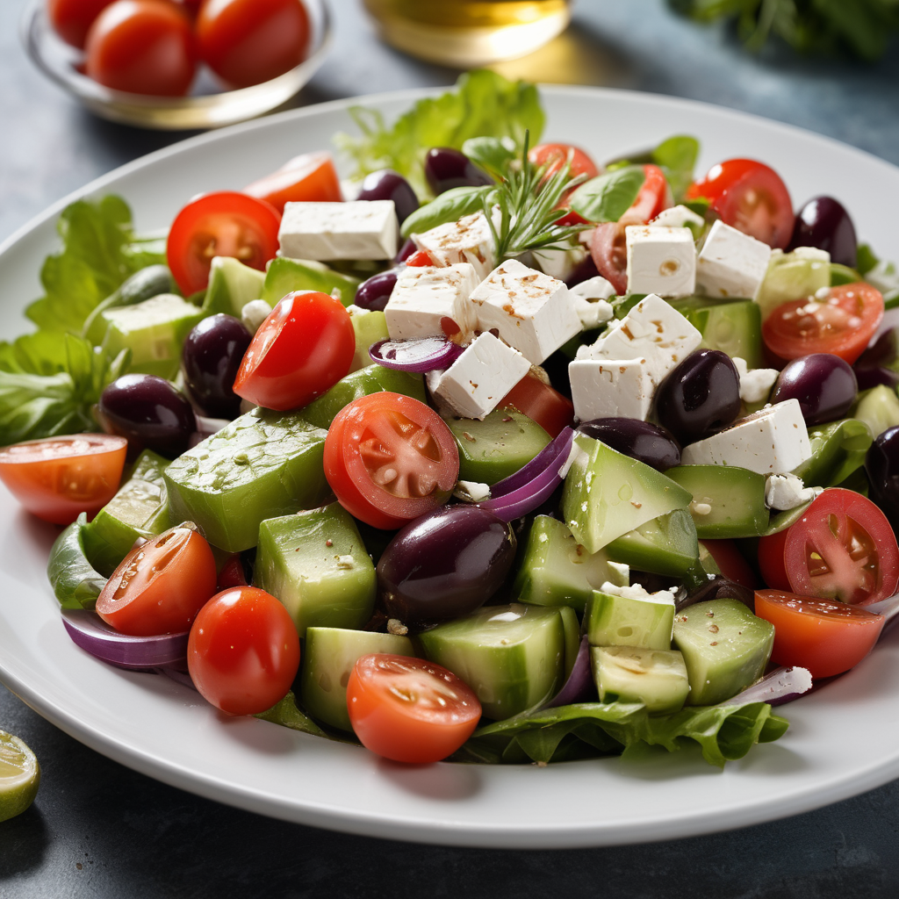

Hozzávalók:
- 1 Friss uborka, kockázva
- 1 paradicsom, kockázva
- 1 Feta sajt, kockázva vagy morzsolta
- 5 db Olívabogyó (fekete vagy zöld)
- 1 Vöröshagyma, vékonyan szeletelve vagy apróra vágva
- 1 adag Friss petrezselyem vagy oregánó, apróra vágva
- 2 tk Extra szűz olívaolaj
- 2 ek Friss citromlé vagy vörösbor ecet
- Só és frissen őrölt fekete bors ízlés szerint
Elkészítés:
- Keverjük össze az összetevőket egy tálban, majd locsoljuk meg extra szűz olívaolajjal és citromlével vagy vörösbor ecettel. Sózzuk és borsozzuk ízlés szerint.